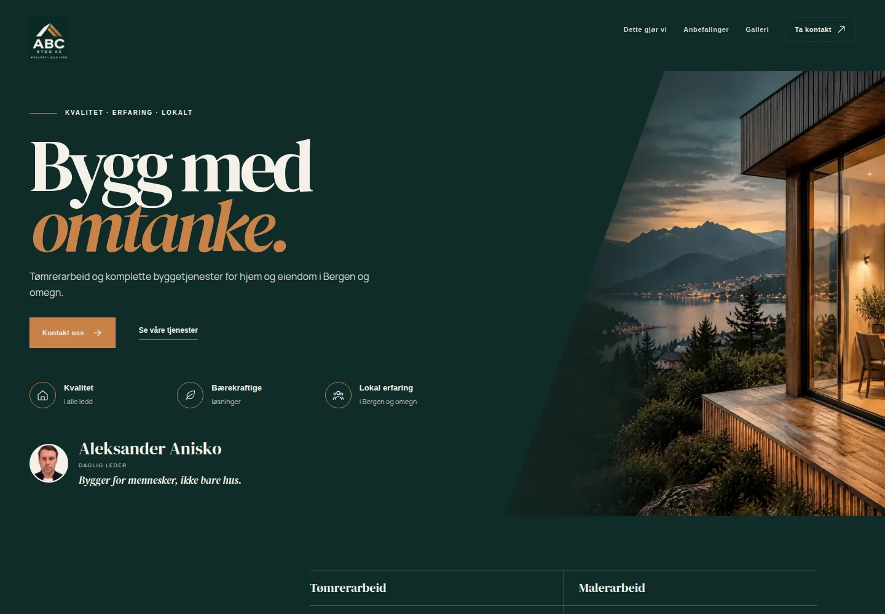
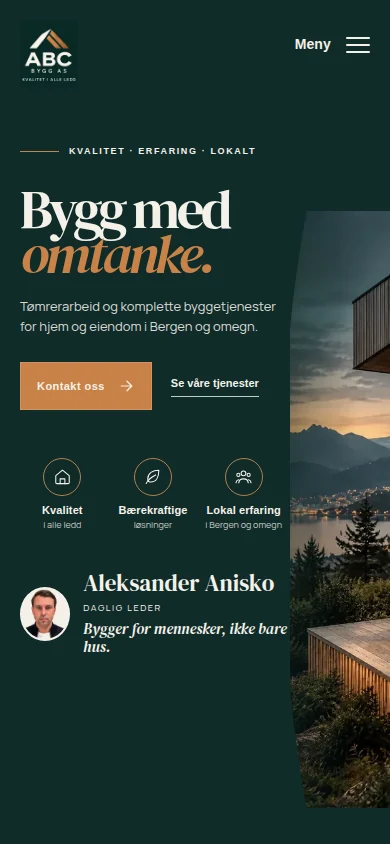

PORTEFØLJE / 01 EKTE KUNDEPROSJEKT
Nettside for ABC Bygg AS.
En nettside for en byggbedrift i Bergen og omegn som gjør tjenester, tidligere arbeid og kontakt mer tilgjengelig. Dette er det ene publiserte kundeprosjektet jeg kan vise nå.

OPPGAVEN
Gi besøkende svar før de tar kontakt.
En potensiell kunde vil vite hvilke oppdrag bedriften tar, om den jobber i deres område og hvordan en forespørsel kan sendes. Nettsiden samler disse svarene i en tydelig rekkefølge: introduksjon, tjenester, arbeidsprøver og kontakt.
LEVERANSEN
Et faktisk nettsted du kan utforske.
En forside som presenterer tilbudet og leder videre til relevante tjenester.
Responsivt design som fungerer på mobil og stor skjerm.
Plass til tjenester, tidligere arbeid og virksomhetsinformasjon.
En tydelig vei til en konkret forespørsel.

SAMME INNHOLD, LITEN SKJERM
Bygget for mobilen også.
Skjermbildene viser selve nettsiden, ikke dokumenterte trafikk-, salgs- eller SEO-resultater. Jeg vil heller vise hva som faktisk er laget enn å tillegge prosjektet effekt som ikke er målt.
Åpne den publiserte siden ↗Konseptdemoer er noe annet.
Jeg har også laget fiktive demonstrasjoner for enkelte bransjer. De er eksempler på mulige oppsett, ikke kundearbeid, referanser eller bevis for resultater. Se konseptdemoene tydelig merket her.
Hva må nettsiden din forklare?
Fortell meg litt om bedriften. Jeg svarer med et realistisk forslag på e-post.
Send forespørsel ↗